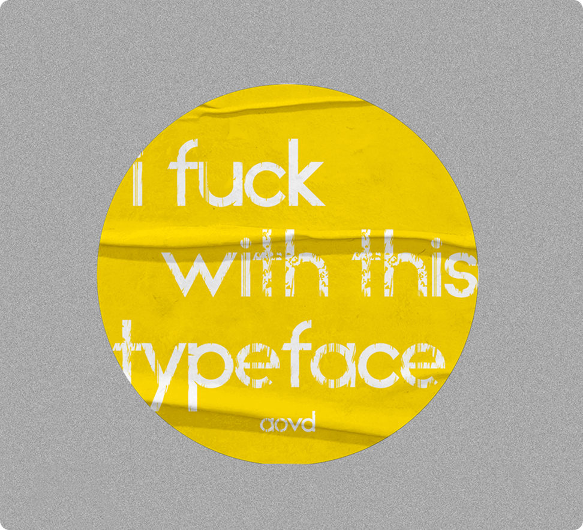
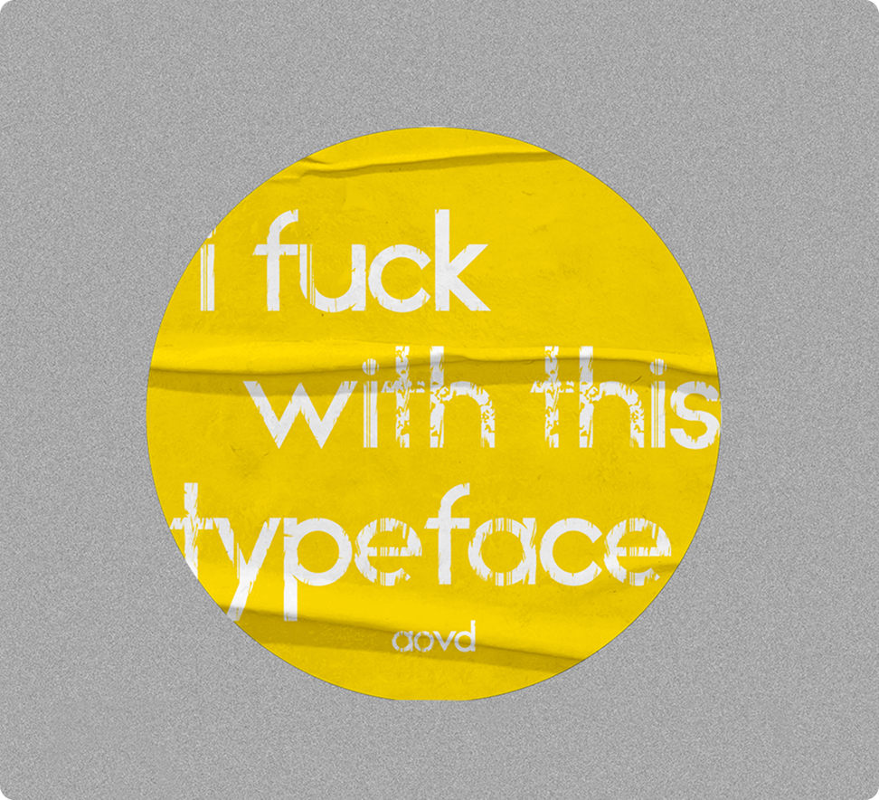

Timeframe
March 2025

March 2025
How can we go beyond conventional methods of visualizing data?
In this project, I transform the medium of a typeface into something that uncovers
linguistical statistics within languages, developing a data visualization system expandable to multiple languages and glyphs.
Individual
This project delved into the creation of a brand typeface for the website Art of Visual Data. The goal of this typeface was to develop a unique and creative way to visualize data.
When I began researching different statistical data on typography, I came across a sculpture by Mike Knuepfel of a keyboard that reflected the data of letter frequency in the English language. I thought this data was interesting but poorly presented, as the data is based on the dictionary, not keyboard usage.

If we look at keyboard frequency, QWER & WASD would see heavy spikes in letter frequency as these keys are heavily popular within desktop gaming.
I found the data being compared to be quite interesting, so I started asking “What medium communicates this information effectively while relating to letter frequency?”
It's not where you take things from - it's where you take them to.

This is the data collected for letter/number/digraph/symbol frequencies. I sorted them into bar graphs in rawgraphs.io. Analyzing this data, we can see that ‘e’ is the most frequent letter, ‘th’ is the most common letter pair, ‘1’ is the most frequent number, and the comma is the most common punctuation mark.
This data was very interesting to me as I never noticed how often we use certain glyphs or letters in pairs, such as ‘th.’ This inspired me to create a system that visualizes how often we utilize these glyphs.

• Making a typeface allows me to create a visual system that also fits the content of the data.
• Creating a visualize system for typography also allows expansion into other languages, glyphs, and symbols.
• A typeface has the potential to display data in real-time through letter pairs.
• A typeface goes beyond the conventional bar or pie graph, and is something interactive and brandable.
The main concept of the typeface is that the more frequent a letter, symbol, or number is used in the language, the more decayed or worn down it would look. This process means that I needed to create a sans-serif font that has enough weight to show decay.
I used Adobe Illustrator and a bit of geometry to create the typeface. As seen above, all aspects of the
letter can be measured by multiplying or dividing the initial width of the stem against itself.
For example, the width of the letter ‘P’ is four stems long, and ‘D’ is five and a half stems long.
I had trouble creating the letter S because I relied on a rectangular grid to guide my letter making. The letter S challenges this grid through it’s organic form, so it geometrically never aligned quite perfectly. This challenge pushed me to explore many versions of the S until I found one that looked natural.
The way that I incorporated data within the typeface was through a simple metaphor of decay. In short, the more frequent a chracter is present within the language, the more deteriorated it would look.
To show the letter frequency of the letter we can apply the metaphor
of how things we use over time slowly decay. So the more frequent a letter or glyph is used, we can show more decay.
To create the brush effect, I used the Illustrator brush tool and turned it into a vector to cut the letters.
To create the texture for letter pairs, I used an unconventional method inspired by a viral Instagram post on logo making.
In my experimentation, I dipped bread into ink and pressed it onto paper to create a texture,
then vectorized the print.
To show the letter frequency of the letter we can apply the metaphor
of how things we use over time slowly decay. So the more frequent a letter or glyph is used, we can show more decay.
To create the brush effect, I used the Illustrator brush tool and turned it into a vector to cut the letters.
The main idea for the decay system is that the severity of the decay corresponds to its frequency in the English language. For instance, ‘e’ takes up 12.02 percent of letters in the English language, the most out of any character, so ‘e’ would receive a heavy amount of the decay effect.
This is the individual letter system. It uses a brush stroke pattern to take away from the original forms of the typeface, creating a “decay” effect.
This is the letter pair decay system, using a bread crumb pattern while also stacking on top of the individual brush stroke letter pattern. This creates an additional layer of decay by stacking systems together.
This is the number decay system, using a spatter pattern with the number decay gradually growing as the value increases. This pattern was created through the Adobe Illustrator effects, and then rasterized into a vector to use the shape builder tool to “decay” the glyph.
This is the punctuation decay system, using a pixel pattern. This system, alongside many others, gently retains the brush stroke decay pattern from the main letter frequency decay system to keep a bit of consistency between the visual style
To package this typeface, I learnt a new software called FontLab 8. I brought the individual glyphs I made in in Adobe Illustrator into this software to kern 512 pairs of letters. This was quite a time consuming process, however this helped me develop an eye for good letter spacing.
This is the AoVD Typeface—a typeface containing 6 fonts, each with 64 unique glyphs and 517 kerning pairs.
*This typeface may be rasterized by your browser*
The cover of my type specimen booklet was inspired by Studio K95. I took their idea of different page sizes on the typeface name and applied it to my booklet in a more intentional way, showing the typeface’s baseline, x-height, etc...
Under the time constraint of one month, I’ve managed to create a systematic data-driven typeface, type specimen, and a few brand applications that communicates the essence of the Art of Visual Data.
I created a Type Specimen to present the AoVD typeface. In this type specimen I showed the statistical data of letter frequency, potential expansions into different languages, and systems, and variations in typeface sizes.

 

My typeface system can be expanded into other languages, such as Korean, by applying the same idea of the English letter decay to Hangul characters. In the type specimen, I’ve created a brief introduction and example of how this may be applied to other glyphs and symbols.

I’m proud to say that this project received an award from the 2025 RGD Student Awards!
This year’s RGD Student Awards held 900+ submissions from across all of Canada. This award makes this project one of my most successful and favourites in my design career!
One of my biggest challenges and newly added assets was learning FontLab and all the aspects of typeface design!
Another big challenge I faced was managing the large amount of data, which required a deep analysis to give each glyph its own unique visual interpretation.